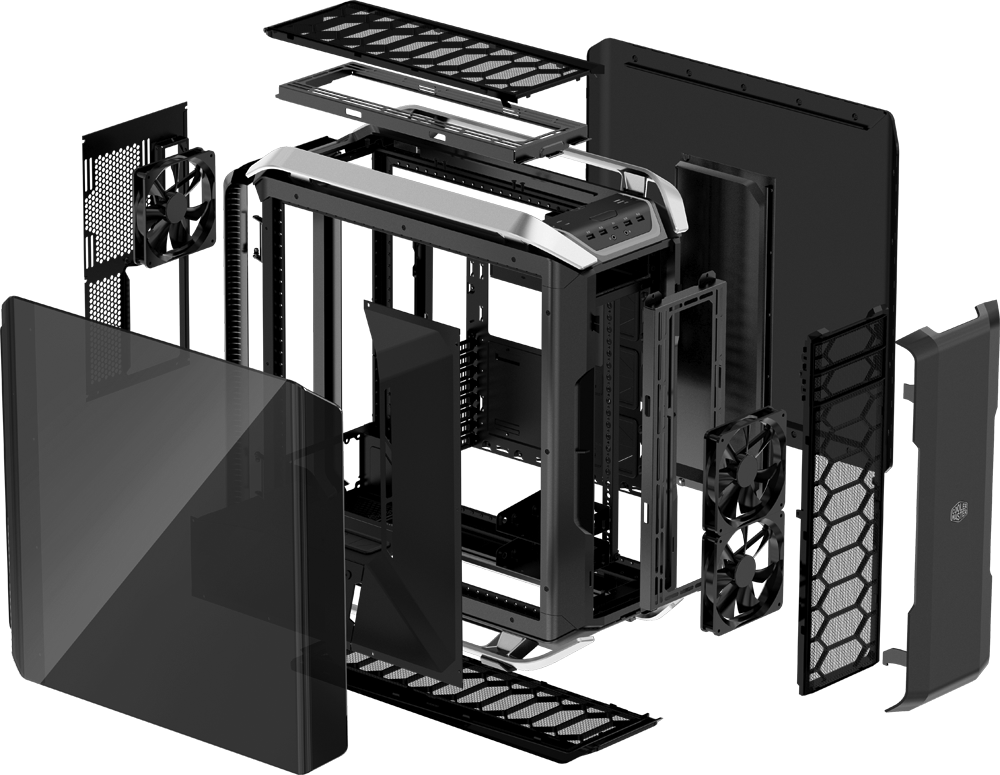
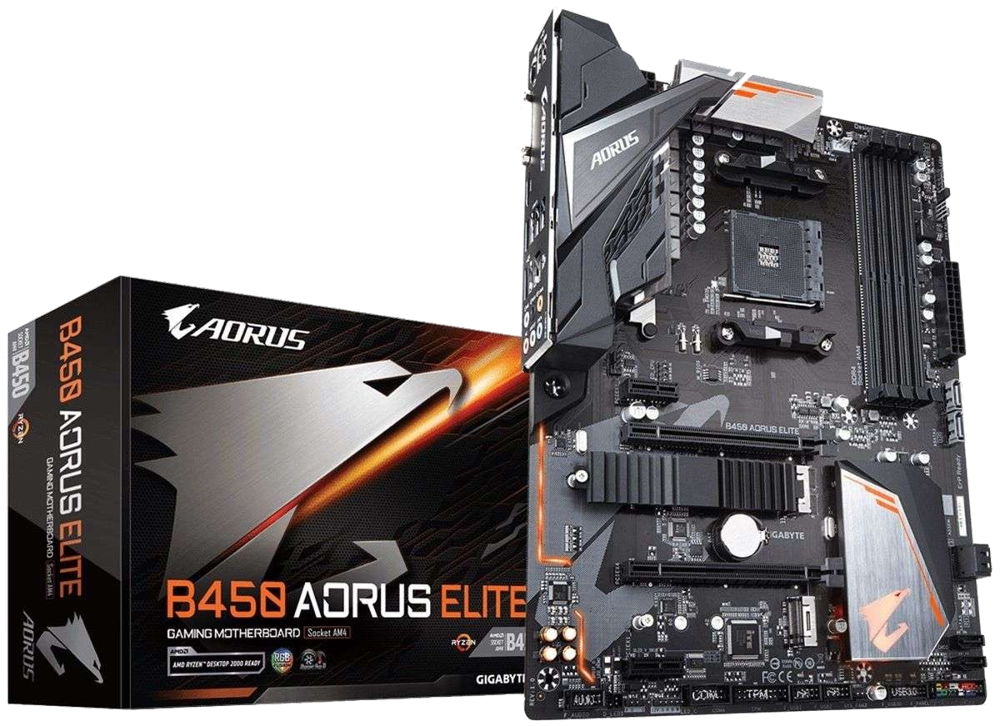
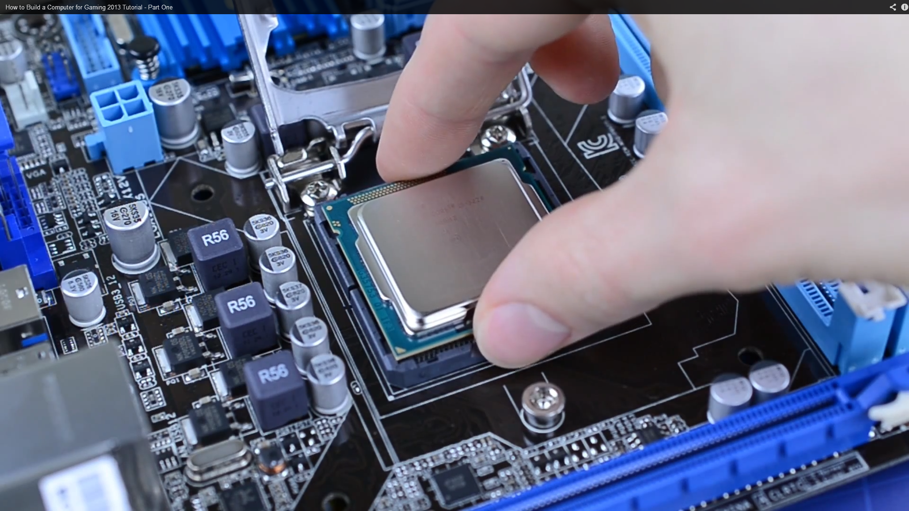
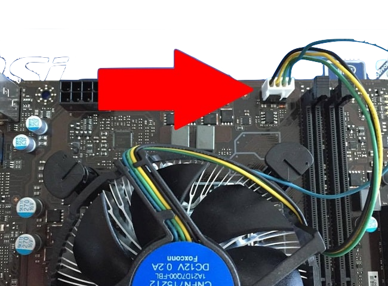
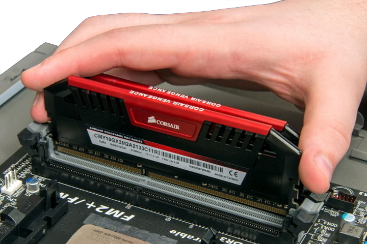
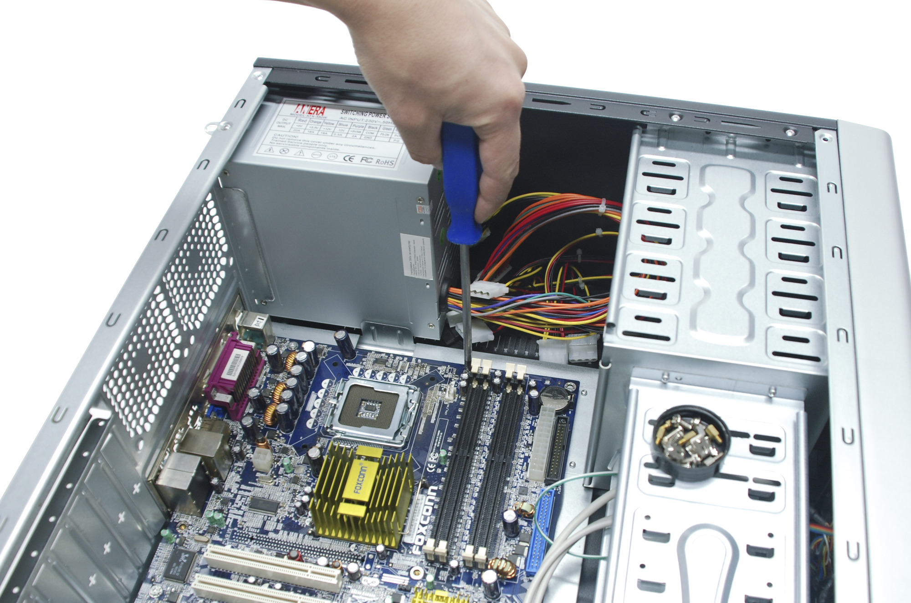
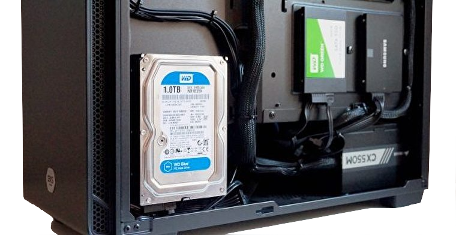
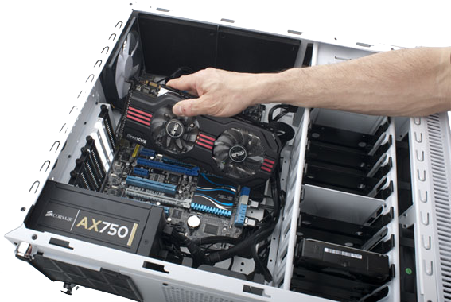
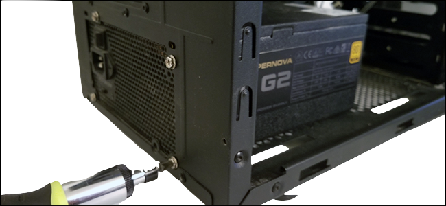
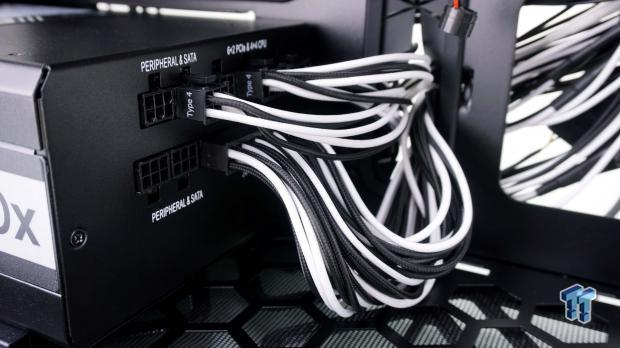

PC Genius
The Build Guide
1. Prepare Your Case
The first step in any build is removing all panels that are currently on the case for easy acces when putting in
all of your parts. Store the panels in a safe place. It is also very important to keep track of all the screws that come with your computer case, it is best to sort
them by their type in seperate bowls.

2. Open The Motherboard
Take the board out of it's box and place it onto it's own box. Refrain from touching any of circuit and especially
the bottom to make sure you don't damage the board.

3. Insert The Cpu and Cooler
Open the cpu socket on the motherboard by lifting the bar up. Take the CPU out of its plastic box carefully
by it's sides and gently place it into the socket. When placing it align the golden triangle on the CPU's corner with the one on the socket as shown in the picture below.
On the 4 sides of the CPU socket there are holes that are used for mounting the cooler. Place the cooler onto the cpu and tighten the screws after inserting them into
the holes.

4. Conect The Fan To The Motherboard
After you installed the cooler and pushed down the four pins you have to plug the cable into the
cpu fan header on the motherboard, which is usually above the CPU socket.

5. Install RAM
Open the RAM slots on the motherboard by pushing down the clips on each side and then push the RAM sticks in untill you
hear a clicking sound.

6. Place the MotherBoard Into the PC Case
Put the case with the motherboard tray facing upwards and place the motherbard onto the tray
while making sure to align the holes on the board with the ones in the case. Then insert the screws into the holes and make sure the motherboard is secure.

7. Insert your hard drive and ssd into the case
Most cases will have hard drive and SSD mounts behind the motherboard tray as
shown in the picture below. After mounting the drives connect the SATA Cables from the drives to the motherboard ports labelles SATA 1 and 2 which are
usually on the bottom right side of the board.

8. Install The GPU
Remove the metal bar covering the gpu slot on the side of the case by unscrewing it, and then insert the GPU
until you hear a click.

9. Install The Power Supply
Put the case on its'side and slide in the power supply into it's slot which is usually in the bottom
left of the case. Insert the screws through the holes in the case into the PSU and tighten them.

10. Plug In All Of the PSU Cables
At the back of the power supply there are several plugs that should be connected to different
parts of the computer. Take a look at what components require what plugs and conect them to the power supply. An easy way to differentiate connectors is
the number of pins on the plug.

11. Turn It On!
After finishing the wiring the only thing left is to turn it on and install Windows!